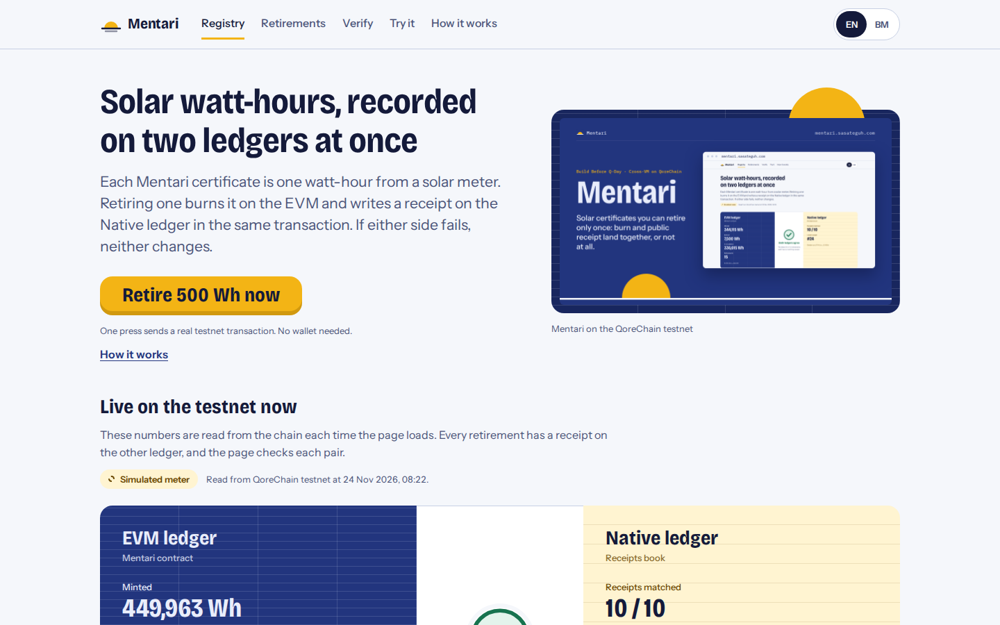
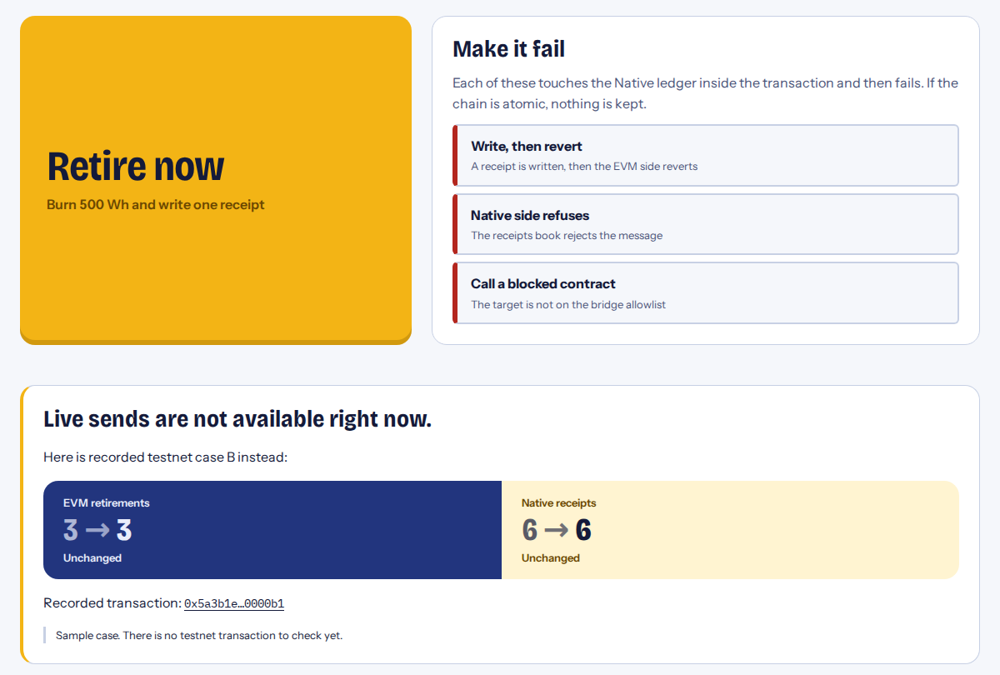

Solar certificates you can retire only once: burn and public receipt land together, or not at all.
Build Before Q-Day: The QoreChain Developer Fest
Built in Malaysia by Aiman Malib

Retiring a certificate burns it in an EVM contract and writes a public receipt into a Native contract through the Cross-VM bridge, in the same transaction.
retire burns the watt-hours, then builds the receipt note from typed fields.0x…0901 sends record to qday-receipts, which is on the testnet allowlist: governance proposal 40, code id 865.retire(wh, memo) burn wh executeCrossVMCall(Native, receipts book, {"record":{"note":"MTR1 n=… wh=… by=0x… m=…"}}) check id is new store Retirement{holder, wh, receiptId}
The EVM event names the Native receipt. The Native note names the EVM retirement.
If either side fails, neither happens. AtomicityProbe, a separate demo contract, fails on purpose.
| Case | What AtomicityProbe does | Must hold |
|---|---|---|
| B | Writes a receipt, then reverts | Receipt count the same before and after |
| C | Asks the Native contract to refuse | Receipt count the same before and after |
| D | Calls a Native contract governance has not approved | Receipt count the same before and after |
Tested against the bridge mock today. Testnet transaction hashes for each case come with the deployment.

Every certificate starts as a solar meter reading signed with ML-DSA-87, and the contract checks it with the pqcVerify precompile.
transfer only sends to accounts whose ML-DSA-87 key is registered on chain with proof of possession (pqcKeyStatus).| Precompile | Address |
|---|---|
| Cross-VM bridge | 0x…0901 |
| pqcVerify (ML-DSA-87) | 0x…0a01 |
| pqcKeyStatus | 0x…0a02 |
What the code uses, and where. Each kit is pinned in package.json.
| Kit or feature | Version or address | Where |
|---|---|---|
| @qorechain/sdk | 0.14.0 | Deriving the test accounts |
| Bridge, pqcVerify, pqcKeyStatus | 0x…0901 · 0x…0a01 · 0x…0a02 | contracts/src/lib |
| qday-receipts Native contract | code id 865 | The target of every retirement |
| @qorechain/qorex-rainbowkit | 0.1.0 | QoreX as the wallet on the Try it page |
| @qorechain/qorex-wallet-mock | 0.1.0 | QoreX in the browser tests |
The project page on the fest site is not created yet, so nothing is declared or verified there yet.
I broke Mentari.sol on purpose for each invariant, and each break turned its invariant red. The steps are in the test notes. The site is in English and Bahasa Melayu, and every design decision has a record with how to undo it.
I built Mentari with AI coding agents (Claude Code). AI_USAGE.md has the full account.
Three roles in separate sessions: a planner, a builder that takes one slice at a time, and a reviewer that breaks the code to see a test turn red. A mechanical gate sits between builder and reviewer.
Almost everything: the contracts and their tests, the server, the site, the documents. Up to 22 November 2026 the builder ran 15 sessions; 12 were accepted on the first try and 3 were not.
Mine: entering the fest, choosing the track, approving the requirements and the visual direction, the accounts and the faucet, and everything published in my name.